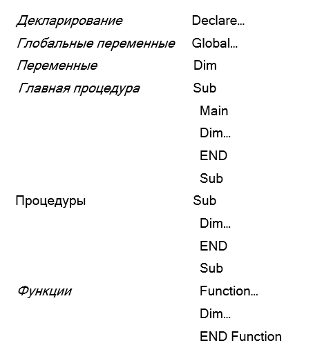

РАЗДЕЛ 10. АВТОМАТИЗАЦИЯ В ГИС
10.1. Макросы
Макрос представляет собой определенную команду (макрокоманду), которая решает заданную в ГИС задачу. Как правило, в ГИС присутствует доступный список макрокоманд, пользователь только редактирует параметры макроса.
Рассмотрим часто используемые макросы (на примере ГИС Географ) [15]:
- открыть форму Open Form <имя>;
- выполнить запрос Run Query <имя>;
- открыть окно карты Open Map <имя>;
- активировать тему Set Theme <имя>;
- открыть таблицу Open Table <имя>.
Макрос, как правило, привязывается к кнопке панели инструментов или к кнопке пользовательской формы.
Многие ГИС имеют встроенные языки программирования, например, MapInfo – MapBasic, ArcView – Avenue и т.д. Как правило, они базируются на языке Basic. Некоторые системы позволяют записывать макросы и открывать их в виде программного модуля с готовым текстом программы, который пользователь может изменить по своему усмотрению.
Программа, написанная на встроенном языке для конкретной системы, называется программным приложением (Application). Приложение пишется, как правило, в отдельном модуле или окне, похожем на текстовый редактор. Программы сохраняются в виде текстовых файлов. Часто после создания приложения его необходимо компилировать. В результате компиляции получается программный файл, запускаемый только внутри данной ГИС (.mbx) [6].
Программное приложение может иметь большой размер и включать несколько модулей. Модули объединяются в проекты. Проект представляет собой небольшой текстовый файл, включающий ссылки на используемые модули. Внутри этих модулей должна быть только одна главная процедура (Sub Main). В другие проекты можно подключать уже существующие модули, тем самым сокращая объем работ (рис. 10.1.).
Рис 10.1. Структура проектов
Если какой-либо модуль внутри проекта ссылается на процедуру/функцию, содержащуюся в неподключенном модуле, проект не откомпилируется и не заработает. Все используемые модули должны быть подключены. После редактирования модуля необходимо заново выполнить компиляцию модуля, а затем компиляцию проекта [6].
10.3. Основные элементы программного приложения (Application)
1. Переменные. Переменная представляет собой именованное место в памяти, значение которого можно изменять. Переменные бывают следующих типов:
· целое (integer);
· десятичное (float, decimal);
· строковое (string);
· логическое (logical, boolean);
· дата (date);
· variant (может включаться любое значение).
Для преобразования переменной из одного типа в другой существуют специальные функции, например:
A = StrToFloat (B)
B = FloatToStr (A)
Имя переменной должно быть зарезервировано в начале программы или функции соответствующим оператором, например:
Dim A as integer ‘резервирование переменной A
A = 5 ‘задание значения переменной A
2. Константы похожи на переменные, но их значения в процессе работы всей программы не изменяются (например, π = 3,14). Использование констант позволяет быть уверенным, что их значение не будет изменено в процессе программы из-за ошибочного кодирования.
3. Выражения. Математическое выражение может включать соответственно «* / + - ». Для группировки операций используются скобки. Используют логические условия «< >, = , AND, OR».
4. Операторы цикла. Операторы цикла предназначены для выполнения повторных операций.
– Оператор FOR: ‘предназначен для выполнения цикличных операций
FOR I = 1 TO 5 ‘выполнять до тех пока I от 1 до 5
{тело цикла }
NEXT ‘следующее значение I
– Оператор WHILE: ‘количество циклов ограничено условием
DO WHILE I<10 ‘выполнять пока I меньше 10
{тело цикла}
LOOP ‘повтор операции
5. Операторы условий. Позволяют активировать команды в зависимости от определенных условий.
– IF <условие> THEN ‘если условие верно то
<оператор1>
ELSE <оператор 2> ‘если нет то
END IF ‘окончание оператора условия
6. Процедуры. Процедура представляет собой подпрограмму с последующим набором команд. Использование периодически повторяющихся процедур позволяет значительно сократить текст программы и унифицировать ее. Процедура вызывается соответствующим оператором Call. Процедура должна декларироваться в начале модуля.
Declare Sub Proc1 ‘декларирование процедуры
...
Sub Proc1 ‘содержимое процедуры
<тело>
END Sub
...
Call Proc1 ‘вызов процедуры
7. Функции
Функция аналогична процедуре, только после вызова возвращает какое-то значение и в своем описании должна включать тип возвращаемой переменной. Возвращенное значение присваивается переменной.
Declare Function Func1 as string ‘декларирование функции
...
Function Func1 as string ‘содержимое функции
<тело>
Func1= «значение»
END Function
...
Dim A1 as String ‘резервирование переменной A1
...
A1 = Func1 ‘вызов функции
При вызове имя функции должно стоять после имени переменной. Типы переменных функции и переменной, которой присваивается значение, должны совпадать.
10.4. Структура программного приложения
Рассмотрим структуру программного приложения на примере MapBasic [10.2]:
В проекте в одном из модулей обязательно присутствует процедура Main. Именно она активируется при запуске приложения.
10.5. Работа с графическими объектами и картой
Встроенный в ГИС язык программирования имеет специальные команды для работы с картой. Например: открыть карту, задать масштаб отображения, задать координаты центра окна, добавить (исключить) слой, создать тематическую карту и добавить в окно карты, уменьшить/увеличить, задать условные знаки слою, переместить слой вверх или вниз в порядке отображения и т.д.
Также присутствует специальные команды создания объектов геометрии по координатам. Геометрические объекты создаются как отдельный тип – специальные графические переменные. Созданные графические объекты- переменные затем можно добавить в выбранный слой. Команды создания графических объектов:
Create Point (х;у) ‘создание точки по координатам x,y
Create Pline ‘создание полилинии
Create Region ‘создание полигона
Create Text ‘создание текста
В полилиниях и регионах количество точек меняется, поэтому вначале запускается команда «создать объект» – создается пустой объект, затем необходимое количество раз запускается команда «добавить узел» (Add Node) с заданными координатами.
10.6. Интерфейс пользователя
Язык программирования включает специальные команды, позволяющие организовать интерфейс пользователя.
1. Меню. Пример представлен на рис. 10.2.
Рис. 10.2. Меню ПО ArcGIS
Create Menu <имя>
Меню включает пункты, каждый из которых ссылается на процедуру (например, открыть файл Call Open File).
Созданное меню собирается в строку меню MenuBar (Create MenuBar)
2. Диалоговые окна. Пример представлен на рис. 10.3.
Система позволяет создавать диалоговые окна, задавая в нужном месте соответствующие элементы. Значение каждого элемента сохраняется в соответствующей переменной. После нажатия кнопки, например «OK», запускается заданная ей процедура, которая в своем теле может использовать введенные в диалоговом окне переменные.
Рис. 10.3. Диалоговое окно
Основные элементы диалоговых окон представлены в табл. 10.1.
3. Панели инструментов. Пример панели инструментов представлен на рис. 10.4.
Рис. 10.4. Панель инструментов MapInfo
Можно создавать кнопки, подключать к ним пиктограммы и задавать процедуру, которая запускается при нажимании кнопки. Кнопки объединяются в панели инструментов.
Кнопки бывают разных типов: обычные, залипающие и задающие функции карты. В ГИС также присутствуют кнопки, позволяющие работать с картой и считывать с нее координаты под мышью. Процедура запускается только после нажатия мыши и в качестве переменных включает координаты х,у в окне карты.
Таблица 10.1.
10.7. Программные компоненты
Существуют ГИС-компоненты, созданные по технологии ActivX, которые можно добавлять в любой современный визуальный язык программирования (Visual Basic, Visual C, Delphi). В результате в данном языке появляются дополнительные команды работы с картой. Многие крупные разработчики ГИС продают такие компоненты (ESRI – Map Object, MapInfo - MapX и т.п.) и лицензии на клиентские места.
Вопросы:
- Что такое макросы?
- Для чего используются программные приложения?
- Назовите основные элементы программного приложения.
- Назовите основные структурные элементы приложения.
- Для чего служат инструменты создания интерфейса пользователя?
- Что такое программные компоненты?